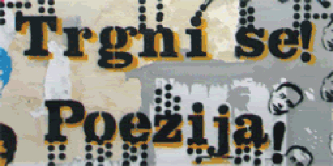

Festival „Trgni se! Poezija” u četiri grada
Objavljeno 1.01.2019. u 16:20

Beogradski festival poezije i knjige „Trgni se! Poezija” biće održan od 22. do 28. maja u Beogradu, Sremskim Karlovcima, Novom Sadu i Vršcu, najavili su danas organizatori na konferenciji za medije u beogradskom EU info centru.
Slogan ove izuzetno vredne kulturne manifestacije biće „Sa svetlim poljupcem na usnama” po stihu pesnika Rastka Petkovića, kome će biti priređen omaž povodom 70 godina od smrti pesnika.
Prema rečima Dejana Matića, direktora festivala, program će obuhvatati čitanje poezije stranih i domaćih autora, razgovore sa pesnicima i prevodiocima, promocije novih knjiga, poeziju za srednjoškolce i studente...
„Festival se održava na nekoliko lokacija. Naši domaćin biće između ostalog Narodna biblioteka Srbije gde će 23. maja biti organizovano svečano otvaranje. U Beogradu nam je domaćin i Gradska biblioteka kao i Galerija Polet, Krokodilov Centar za savremenu književnost, Galerija Polet, EU info centar, Filozofski fakultet, Filološki fakultet...” kazao je Matić, prenosi Tanjug.
On ističe da duguje veliku zahvalnost inostranim kulturnim centrima i ambasadama u Beogradu koju su svojim delovanjem pomogli festival.
„Važno je kada neko iz inostranstva dođe na naš festival i podeli svoje stvaralaštvo sa publikom u Srbiji”, kazao je Matić i najavio dolazak značajnih evropskih pisaca, književnih prevodilaca i pisaca u Beograd.
„Ilma Rakus nam dolazi iz Švajcarske, Marija Kbrera Kaljis iz Španije, Kristof V. Bauer iz Austrije, Andre Šinkel i Snežana Minić iz Nemačke, Jakub Kornahauzer iz Poljske, Pernila Berglund iz Švedske, Dino Kreho iz Hrvatske, Biserka Rajačić, Dubravka Matović, Stevan Tontić, Đorđe Trišović, Aleksandra Milanović...iz Srbije”, naveo je Matić.
Joakim Vern, zamenik ambasadora Švedske u Beogradu, naglasio je da ima veliko zadovoljstvo što može da podrži poeziju, literaturu i sam život u Srbiji kroz festival „Trgni se! Poezija”
„Važno nam je da održavamo dobre odnose između dve zemlje jer je još šezdesetih i sedamdesetih godina prošlog veka u Švedsku dolazilo mnogi Srba na rad. Postoji posebna veza između naših naroda i država koje imaju diplomatske odnose duže od 100 godina. Ovakve manifestacije su odličan okvir za razvijanje odnosa između Srbije i Švedske”, kazao je Vern.
Biljana Pajić iz Gete instituta u Beogradu kaže da već godinama unazad nemačka književnost i nemački pisci imaju odličnu promociju u Srbiji.
„Važno nam je da predstavimo i nemačku poeziju u Beogradu i ovakav festival je prava prilika za takav angažman”, kazala je Pajić i dodala da nemački pesnik i prevodilac Angel Šinkel dolazi u Beograd ove godine na festival, gde će biti objavljena dvojezična knjiga sa njegovim pesmama.